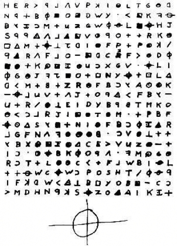

조디악 킬러(Zodiac Killer)는 1960년대 후반에 북부 캘리포니아에서 활동했던 연쇄 살인자를 말한다.
그의 신원은 아직까지 밝혀지지 않았다.
조디악이라는 명칭은 그가 언론사에 보냈던 일련의 조롱 편지에서 유래된 것으로,
그가 보냈던 편지에는 총 네 개의 암호가 포함되어있다. 그 중 셋은 아직 해독되지 않았다.
조디악은 1968년 12월에서 1969년 10월까지 베니샤, 벌레이오, 베레사 호, 샌프란시스코 등지에서
5명을 살해한 것으로 확인됐다. 그는 16세에서 29세 사이의 남자 네 명과 여자 세 명을 표적으로 삼았다
. 이 외에도 조디악의 희생자로 의심되는 경우가 존재하지만 그들을
살인자와 연결하는 결정적인 증거가 발견되지 않았다.
샌프란시스코 경찰국은 2004년 4월에 이 사건을 "활동 없음(inactive)"으로 구분하였으나,
2007년 3월에 사건 수사를 재개했다. 이 사건은 다른 관할구역에서도 여전히 종결되지 않은 상태다.
